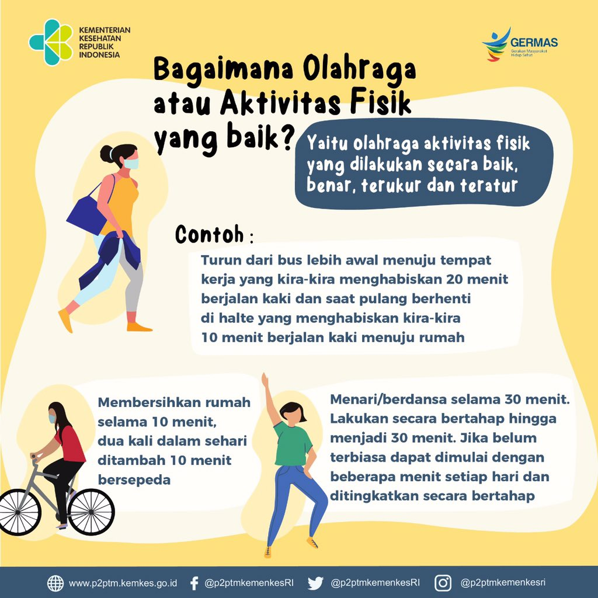

<!DOCTYPE html>
<html lang="id"></html>
<head>
    <meta charset="UTF-8">
    <title> Tugas Pemrograman WEB</title>
    <style>
        body{
            background-color:burlywood;
        }
    </style>
    </head>
    <body>
        <h1 style="text-overflow:center">
            <font color="blue">
                <center>Pentingnya Menjaga Kesehatan Sejak Dini</center>
            </font>
        </h1>
        <hr>
<h3  style="text-align:left"><a href="halaman2.html"><center>Beranda Gallery</center></a></h3>
<hr>
<p>Menjaga Kesehatan dan Kebugaran tubuh merupakan hal yang sangat penting. Hal ini karena dengan memiliki tubuh yang sehat dan bugar dapat mencegah tubuh terserang penyakit sehingga kita dapat tetap menjalankan aktivitas sehari-hari</p>
<h3><b> Cek Kondisi Kesehatan Secara Berkala </b></h3>
<P>Tujuan melakukan cek kesehatan  secara berkala adalah untuk membandingkan status kesehatan kita sebelumnya, apakah terjadi penurunan atau peningkatan kondisi kesehatan.<b>Gejala penyakit yang tidak terdeteksi dari dini dapat berakibat fatal pada kesehatan. </b></P>
<h3><b> Rajin Aktivitas Fisik</b></h3>

<p> Rajin aktivitas fisik dapat dilakukan dengan cara olahraga secara teratur.<br> Seperti yang kita ketahui bahwa olahraga mempunyai banyak manfaat baik bagi kesehatan dan kebugaran tubuh. Olahraga yang dapat kita lakukan banyak jenisnya, contoh: </p>
<ul>
    <li>Senam sehat</li>
    <li>Lari atau Marathon</li>
    <li>Bulu Tangkis</li>
    <li>Tennis</li>
    <li>Bersepeda</li>
    <li>Sepakbola</li>
</ul>
<h3><b>Diet Sehat Dengan Kalori Seimbang</b></h3>
<p> Makanan sehat adalah makanan yang mengandung gizi seimbang, kaya akan serat dan yang akan dibutuhkan untuk perkembangan tubuh. Dilhat dari kandungannya, makanan sehat adalah makanan yang mengandung karbohidrat,protein, mineral, vitamin, dan lemak tak jenuh.</p>
<table border="1" width="1200px">
    <tr>
        <th bgcolor="green">Kandungan</th>
        <th bgcolor="green">Fungsi</th>
        <th bgcolor="green">Makanan</th>
    </tr>
    <tr>
        <td><b>Kandungan</td></b>
        <td><b>Fungsi</td></b>
        <td><b>Makanan</td></b>
    </tr>
    <tr>
        <td>Karbohidrat</td>
        <td>Sumber Energi</td>
        <td>Sereal, Roti, Gandum</td>
    </tr>
    <tr>
        <td> Protein</td>
        <td>Menghasilkan Enzim dan Hormon, Memperbaiki Sel,<br>Meningkatkan Kekebalan Tubuh</td>
        <td>Alpukat, Ikan, Dada Ayam, Daging</td>
    </tr>
    <tr>
        <td>Mineral</td>
        <td>Menjalankan Fungsi Tubuh</td>
        <td>Kacang-Kacangan, Gandum, Dada Ayam, dsb</td>
    </tr>
    <tr> 
        <td>Vitamin</td>
        <td>Membantu Mengatur Metaboliesme, Mencegah Penyakit Kronis</td>
        <td>Sayuran Berdaun Hijau, Kacang</td>
    </tr>
    <tr>
        <td>Lemak Tak Jenuh</td>
        <td>Meningkatkan Kolestrol Baik, Mengurangi kadar kolestrol jahat</td>
        <td>Daging Ikan, Alpukat</td>
    </tr>
</table>
<h3><b>Istirahat Yang Cukup</b></h3>
<p>Istirahat cukup merupakan bagian dari gaya hidup sehat. Istirahat atau tidur yang cukup dapat berdampak lebih baik bagi kesehatan. Waktu istirahat atau tidur yang ideal adalah 7-9 Jam sehari.</p>
<h3><b>Menjaga Kebersihan</b></h3>
<p>Cara menjaga kesehatan lainnya adalah dengan cara menjaga kebersihan diri maupun lingkungan sekitar. Dengan begitu, kita akan terhindar dari serangan berbagai penyakit. Berikut adalah beberaoa cara menjaga kebersihan yang baik:</p>
<ol>
    <li>Mandi setiap hari</li>
    <li>Cuci Tangan Sebelum Makan</li>
    <li>Tutup Mulut dan Hidung dengan Tisu saat Batuk dan Bersin</li>
</ol>
<h3>Masukkan Identitas Anda</h3>
<form action="" method="POST">
    <table>
        <tr>
            <td width="120"> Nama</td>
            <td><input type="text"></td>
        </tr>
        <tr>
            <td>Password</td>
            <td><input type="password"></td>
        </tr>
        <tr>
            <td>NPM</td>
            <td><input type="number"></td>
        </tr>
        <tr>
            <td>Tanggal lahir</td>
            <td><input type="date"></td>
        </tr>
        <tr>
            <td>Jenis Kelamin</td>
            <td><input type="radio" name="jk"> Laki-laki
                <input type="radio" name="jk"> Perempuan
            </td>
        </tr>
        <tr>
            <td>Hobi</td>
            <td><input type="checkbox" name="jk"> Bulu Tangkis
                <input type="checkbox" name="jk"> Baket
            </td>
        </tr>
        <tr>
            <td>Mahasiswa Angkatan</td>
            <td><select>
                <option>2017</option>
                <option>2018</option>
                <option>2019</option>
                <option>2020</option>
                <option>2021</option>
                <option>2022</option>
            </select>
            </td>
        </tr>
        <tr>
            <td>Alamat</td>
            <td><textarea></textarea></td>
        </tr>
        <tr>
            <td></td>
            <td><input type="submit" value="Simpan">
                <input type="reset" value="Reset"> 
                <input type="button" value="Kembali">
            </td>
        </tr>
    </table>
</form>
</body>
    </html>